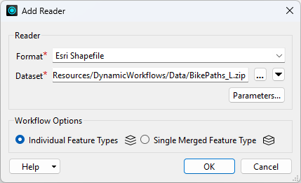
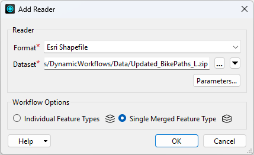
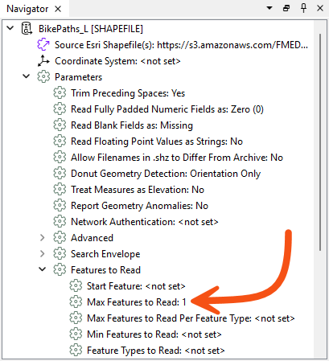
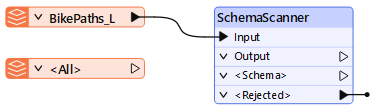
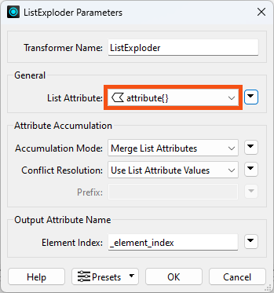
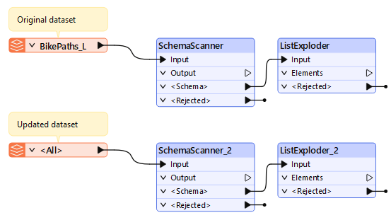
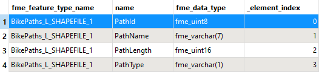
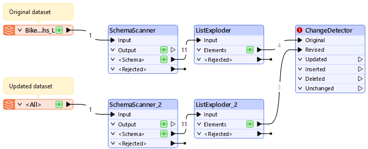
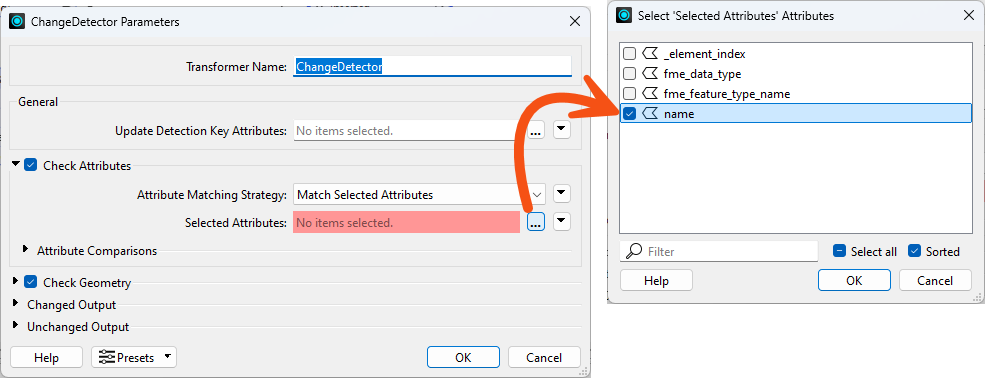
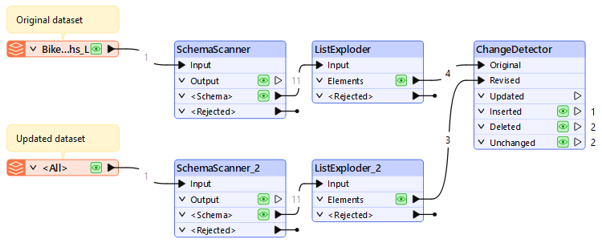

After completing this lesson, you'll be able to:
In this lesson, you will:
In many workplaces, data sources and their schemas can change without notice. Attributes and data types can be added, removed, and changed depending on who manages and uploads the data.
Imagine a scenario where a new hire doesn’t know the existing schemas for the current datasets and tries to update a dataset with newly created data. Now, you either have a dataset with unwanted additional columns that duplicate the old columns, or you’re missing data in your existing dataset because the schemas didn’t match. This can be a massive headache for whoever manages the data in the long term, and nobody likes going back and correcting datasets.
Schema drift can even occur in organizations with more robust data governance practices. Consider what happens if you build an integration with one version of an external vendor API, but then the API is upgraded, and the results of your call change. You are now dealing with a new schema due to factors largely outside your control.
With the SchemaScanner transformer, we can be proactive by detecting and reacting to schema drift in our datasets. These two essential steps make it easy to adapt to changing schemas with FME.
For example, we have a dataset in our database with a table containing the following attributes:
An employee uploads a new set of recordings every few days to expand this dataset. The employee may not be familiar with the original dataset and may have made assumptions about attribute naming. Their dataset contains the following attributes:
In this case, the schema has drifted, with the PathType attribute missing and the PathLength attribute incorrectly named "Distance".
Before the user can upload data to the existing dataset, we want to detect schema changes so we can notify the user to update their input data schema.
This is where the SchemaScanner comes into use. It allows us to extract the schema of the incoming dataset and compare it with the known dataset before allowing the data to be uploaded. If the schemas match, then all is good to go, and we can allow the data to flow freely into the base dataset. However, if the data’s schema doesn’t match the base dataset, we must react to what is happening here. In our case, we will create a Schema Change Report that we can then return to the user using email or an FME Flow App.

Jennifer, a GIS Specialist, maintains a bike paths dataset that colleagues top up with new data every few days. The uploads do not always match the agreed schema: a column gets renamed, another goes missing entirely. She wants her workspace to spot that before the data is merged, rather than after.
In this exercise, you will:
The original bike paths dataset is the baseline every upload gets measured against. It goes in first so there is something to compare with.

The uploaded dataset is the one whose schema is in question, so it has to be read without assuming a schema. A single merged feature type is what makes that reader dynamic.

1.

The SchemaScanner turns features into a schema feature. Pointing it at the original dataset gives you the baseline schema in a form you can compare.

A schema feature holds its attributes in an attribute{} list, which does not show up in the Data Preview table. Exploding the list turns each schema entry into its own feature, which is what the ChangeDetector needs later.
attribute{}.

The uploaded dataset needs the same treatment as the original. Duplicating the pair keeps both sides of the comparison identical, which matters when the only thing you want to differ is the data.

Before comparing anything it is worth seeing what a scanned schema actually looks like: one feature per attribute, carrying the attribute's name and its data type.

With both schemas reduced to one feature per attribute, comparing them is an ordinary change detection. Comparing on the name attribute is what surfaces a renamed or missing column.



The workspace can now tell you that an upload no longer matches the schema it is meant to extend, before any of that data reaches the base dataset. The next lesson reacts to that result by producing a report for whoever uploaded the file.